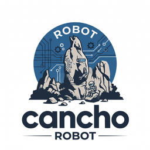

Research · design stage · nothing is built yet
A robot arm controller whose authority you can check.
Driving the SO-101 arms of an XLeRobot from cancho: the servo bus, calibration, kinematics and a safety core every motion goes through, with an authority report the compiler derives.
The question it exists to answer: can the compiler prove that the only thing able to move the arms is the safety core, and that a teleoperator, a learned policy or a second program cannot reach the servo bus?

Why a robot, and why cancho
The arms run today from Python. In two weeks on real hardware, the defects that mattered were not about speed. They were about who could move the arm, and through which checks.
One owner of the bus
Two programs held the same servo bus at once, each with its own idea of where the arm was. A bus that is a linear resource has one owner, and the compiler says so.
No path around the safety core
Every motion was meant to pass the workspace and collision checks, and a recording path did not. Here, moving an arm takes a capability that only the safety core holds.
Frames as types
A workspace bound written in the robot’s frame was checked in each arm’s own frame, so a resting arm was “outside” its grant. Distinct types for distinct frames make that a compile error.
Checked against a reference
Every piece is compared with an independent implementation on the same input: LeRobot reading the same bus, its kinematics solver on the same poses. Differences are written down, not smoothed over.
What v1 will do
One SO-101 arm, then both. Everything here is a plan, written down in the epic, and nothing is promised until it is built and measured.
In v1
- The serial bus at 1 Mbaud and the Feetech STS protocol, bounded and total
- Calibration from the existing LeRobot files: the same degrees LeRobot reports
- Forward and inverse kinematics for the SO-101
- A safety core: workspace with typed frames, joint limits, capsule collisions, speed limit, deadman
- Keyboard teleoperation in a terminal, joint by joint
- A local boundary for Python: it can ask for motion and read state, and cannot reach the bus
Not in v1
- Cameras, dataset writing, training and learned policies (they stay in Python)
- The wheeled base and the camera tower
- A real-time guarantee
How it is built
One controller process owns the buses; everything else is a client. This is the target shape, not a built one.
# target, not built keyboard / policy / recorder (Python) --request--> safety core --command--> servo bus <--state---- <--state--- # the safety core is the only holder of the capability that writes a goal position
The question that decides the headline
The report should name the buses the controller can touch. A serial port is a file, and cancho opens files under a path-narrowed capability; but raw mode at 1 Mbaud needs tcsetattr and, on macOS, the IOSSIOSPEED ioctl: today, a foreign call, reported symbol by symbol rather than device by device. Either cancho grows a serial capability, or v1 says plainly that its device set is enforced in code. Until that is settled it is a target, not a claim.
Plan
The design document comes first, and the first experiment is read-only: open the bus from cancho and get one servo to answer a ping. The epic lists the tasks in the order they would be taken: the issues.
Status
Research, design stage. There is a README, a logo and an epic with its tasks. There is no code, no measurement and no claim beyond what is written above.